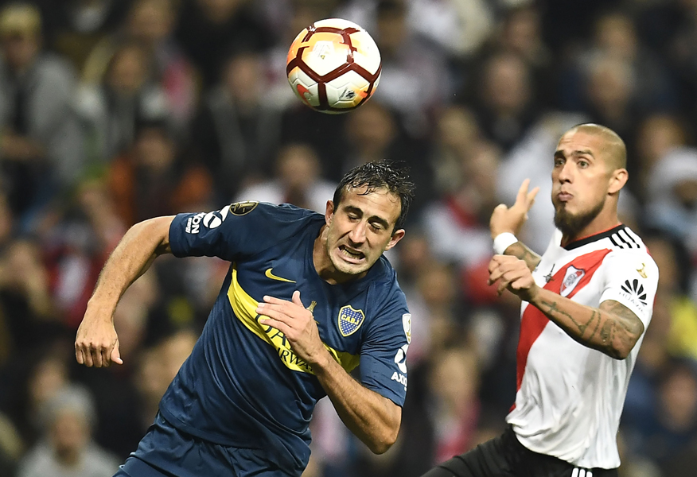
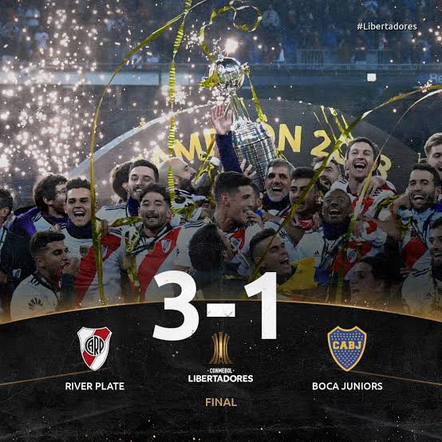
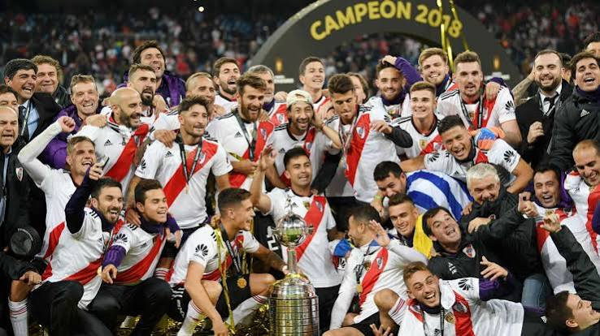
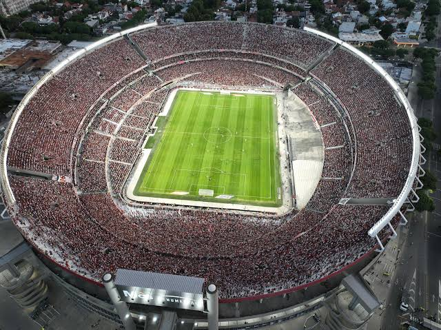

Bienvenidos al mundo River Plate
River Plate es uno de los clubes más importantes del fútbol argentino. Su historia está llena de títulos, grandes jugadores y momentos inolvidables.

El Más Grande - Una pasión que no conoce fronteras
River Plate es uno de los clubes más importantes del fútbol argentino. Su historia está llena de títulos, grandes jugadores y momentos inolvidables.
El 9 de diciembre de 2018, River derrotó a Boca por 3 a 1 en la final de la Copa Libertadores, disputada en Madrid.
Los goles fueron de Lucas Pratto, Juan Fernando Quintero y Gonzalo Martínez.
Hacé clic en los botones para conocer más sobre River.
Elegí un botón para conocer más sobre River.
Imágenes relacionadas con el fútbol y la pasión por River.




River Plate fue fundado el 25 de mayo de 1901 y se convirtió en uno de los clubes más reconocidos de Argentina.
Es la casa de River Plate y se encuentra en el barrio de Núñez, Buenos Aires.
River consiguió uno de los títulos más recordados de su historia al vencer a Boca en Madrid.